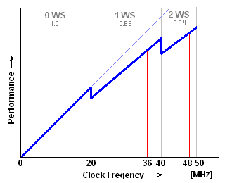
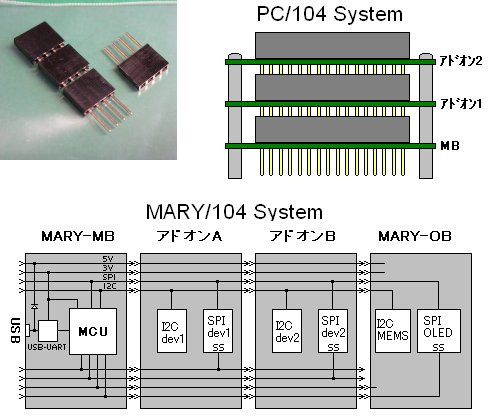

32ビットへの誘い
Translate this page with Microsoft Translator
2011. 7. 20
Update: 2012. 9. 7
マイコン(MCU)の利用が当たり前になって以来、無限の広がりを見せている電子工作。ネット上では面白プロジェクトが連日公開され、電子工作は知的でクリエイティブなハイテク・ホビーを代表するジャンルに成長しました。
ところで、電子工作でマイコンを使っている人の多くは、8ビットMCUから始めていると思います。90年代まではZ80系、00年代ではPICやAVRなど小規模8ビットがマイコン入門の定番でしょうか。10年代に入ると32ビットMCUが手軽に使えるようになり、特にARM系がマイコン入門の定番になりつつあるようです。しかし、電子工作の範囲はとても広いので、一つのMCUファミリだけでカバーしきれるものではありません。プロジェクトの規模に応じて8ビットと32ビットの両方を使いこなせる必要があるのです。
8ビットの入門で手こずった経験のある人は、32ビットと聞いて二の足を踏んでしまう傾向があるようですが、実は32ビットの方が導入のハードルは低いのです。このジャンク・レポートでは、今は8ビットMCU一筋というものの、32ビットMCUにも興味がある、でも始めるのがちょっとめんどい、という人を対象にして32ビットの世界へ案内することにします。最近の流れからすると、これからは32ビットからの入門が主流になるので、そのうち8ビットへの誘いも書く必要が出てくるかも知れません:-)
マイコンを利用している人の多くは、既に自分自身の定番マイコンを持っていると思います。定番マイコンを持つ意味は、使うマイコンに対する理解を深めノウハウを蓄積することにあります。これは結果的に、プロジェクトを効率よく高い完成度で達成できることに繋がります。逆に、あれもこれもとクルクル変えていたのでは、いつまで経っても成果を上げることはできません。もちろん、マイコンの評価も含む場合とか、マイコン攻略そのものが目的の場合はこの限りではありませんが:-) また、セカンダリとして二つめの定番マイコンも持っておくとより良いです。たとえば、単一ファミリでカバーできる電子工作プロジェクトは無理しても80%位なので、一つのMCUファミリしか使わないと電子工作の可能性を狭めてしまいます。でも、8ビットと32ビットそれぞれ1ファミリ、つまり、2種類だけマスタしておけば99%はカバーできます。
さて、実際セカンダリとしてどの32ビットMCUファミリを選んだらよいのかとなると、決定版といったものは存在しません。なぜなら、電子工作では理屈ではなく個人の好みに基づいた選定となるからです。たとえば、ATMEL党員ならAVR32、Microchip信者ならPIC32、外来種が嫌ならRXかSHでしょうか。RXなどはFPU内蔵のが秋月で\1.2kと驚異的な価格で入手できます。実際のところ、8ビットと同じメーカを選ぶと開発環境やマニュアルの癖も共通になることが多いので、すぐに慣れることができます。特にこだわりがないのなら、入手性が良く開発環境および情報の充実しているARM系ということになります。ARM系では、NXP LPC1000ファミリとST STM32ファミリが二大勢力となっています。
16ビットMCUはというと、8ビットの高性能化と32ビットのダウンサイジング化の狭間で、すっかり存在感が無くなってしまいました。実際、産業界でも8ビット・システムを更新する際は、16ビットを飛ばして32ビットに移行することが多いようです。16ビットでも小規模なものは8ビットをほぼ包含するので、16/32ビットという組み合わせも良いと思います。
で、32ビットMCUはどんな場面で使ったらよいのでしょうか。それは、使いたいと思ったところです:-) そう思うのは、その方が楽にプロジェクトを達成できそうだと感じたからでしょう。ならばそれでOK。むしろ、8ビットで重く感じられるようなプロジェクトには、じゃんじゃん使うべきです。趣味の電子工作に理屈を付けても意味のないことですが、具体例を挙げるとすれば次のような場面が考えられます。
もちろん、プログラミングが楽だからと言って何でもかんでも32ビットというのも考え物です。たとえば、単純なシーケンス制御に32ビットはムダ以外の何物でもないし、超低消費電力を求められるプロジェクトでは、8ビットが圧倒的に有利です。プロジェクトの特性に応じてうまく使い分けられるかどうかは、設計センスを問われるところでしょう。
実際に32ビットMCUを始めてみようというとき、事前に準備するべきものや必要な予備知識について、実際の例を元に解説してみます。対象者は...そうですね、AVRをWinAVR(avr-gcc)のコマンドライン・ビルドで開発しているような人がARM系マイコン(Cortex-Mxコア)を初体験するの巻、としますか。ええ、それって私のことなんですが:-) というわけで、私がCortex-Mx系マイコンを導入した際に辿った手順、覚えたことや気付いたことなどを書き出してみます。
今回はNXP LPC1114(Cortex-M0コア)を選定してみました。実は32ビットはARM7TDMIメインでやってきてCortexコアにはあまり興味がありませんでした。今回これに手を出した理由は、突如現れたMARYシステム(後述)に興味を引かれたからです。Cortex-M0クラスのMCUは、内蔵ペリフェラルが8ビットMCUと同じくらいシンプルで容易に習得することができるので、32ビット入門としても最適といえます。ついでに平行してLPC1769(Cortex-M3コア)も試食していますが、このリポートではLPC1114について書きます。
さて、個人プロジェクトにCortex-M0を取り込み32ビットが8ビット・レンジに降りてきたことから、8ビットで標準としているAVRとの棲み分けも変わることになります。私の場合、AVRは32K程度までとし、それを越えるものはARM系とすることにしています。元々、AVRが一番楽しいのは32K以下のレンジだと思っていたところですし(かと言って2Kに燃えるほどの酔狂でも無し)。実際のところ、AVRアーキテクチャが効率的なのは64Kまでで、これを越えると急激に効率が落ちてしまいます。もちろん、プログラムのボリュームよりも要求仕様やその時の気分(笑)によることも大きいので、これに限ったことではありません。もっとも、AVRで64Kのボリュームとなると、電子工作としては比較的大規模な方になると思いますので、人によっては32ビットの出番はないかも知れませんね。
最新の32ビットARMアーキテクチャの一つであるCortex-M0は、ARMコアの中では最もシンプルなバージョンで、回路規模のコンパクトさを武器に8/16ビットMCUの置き換えとして売り込みを図っています。つまり、32ビットのレンジを下位方向に拡張するものというわけですね。
LPC111xはどの辺りかというと、比較的大規模な8ビットMCUに相当します。ROM容量は8〜32Kバイトと少し少ないように思えますが、32ビット・アーキテクチャのコード効率は右の図に示すようにとても高く、8ビットでトップ・クラスを誇るAVRのさらに2倍にもなります。つまり、32KバイトのLPC1114は、64KバイトのAVRに相当するボリュームのプログラムを扱えるのです。
個人プロジェクトでARMを使うときは、ビルド・ツールはgccで決まりです。Unixな人は全然問題ありませんが、Windowsな人はCygwinでgccを使用するか、フリーで使えるWindowsネイティブ対応のパッケージを探さなければなりません。ARM7TDMI全盛の頃はWinARMでしたが、Cortexが普及してからはSourcery CodeBench Lite (登録不要)が主流になっているようで、今回はこれを利用することにします。当然ですが、デバイス・メーカが異なってもARMコアであるかぎり開発環境は共通です。Sourcery G++ Liteは、インストールしたままの状態ではコマンドライン・ビルドに必要な一部のプログラム(といってもmakeとかrmくらい)を欠いているので、別途用意する必要があります。これらは、WinAVRにも含まれるので、WinAVRを使っていてそこにパスが通っていればOKです。
デバイスへの書き込みに関しては困難はありません。32ビットMCUの多くはUART経由で内蔵フラッシュに書き込めるので、PIC/AVRなど8ビット入門で最大の問題となるライタを必要としないからです。今回使用するLPC1xxxの場合も同様で、UART/USB/CAN/JTAGなどいくつかの内蔵ペリフェラルを経由した書き込みをサポートします。もちろん、PC側の書き込み制御プログラムは必要で、別途用意しておく必要はあります。フリーで出回っているものでは、GUIベースではFlashMagic、コンソール・ベースではlpc21ispや拙作のlpcsp(avrspのNXP ARM版)があり、書き込み速度はlpcspが最も高速です。
開発環境として最低限準備するものは、以上の2つだけです。これだけあれば、プログラムをビルドしてターゲットMCUに書き込むことができます。あとは必要に応じてIDEやJTAGデバッガなどを用意すると良いでしょう。
| レジスタ | C関数での使われ方 |
|---|---|
| R0 | 引数/戻り値(破壊) |
| R1 | 引数/戻り値(破壊) |
| R2 | 引数/戻り値(破壊) |
| R3 | 引数/戻り値(破壊) |
| R4 | 変数/ワーク(保存) |
| R5 | 変数/ワーク(保存) |
| R6 | 変数/ワーク(保存) |
| R7 | 変数/ワーク(保存) |
| R8 | 変数/ワーク(保存) |
| R9 | 変数/ワーク(保存) |
| R10 | 変数/ワーク(保存) |
| R11 | 変数/ワーク(保存) |
| R12 | 変数/ワーク(破壊) |
| R13(SP) | スタック・ポインタ |
| R14(LR) | リンク・レジスタ(破壊) |
| R15(PC) | プログラム・カウンタ |
| PSR | プログラム・ステータス・レジスタ |
| PRIMASK | 割り込みマスク・レジスタ |
| FAULTMASK | 割り込みマスク・レジスタ |
| BASEPRI | 割り込みマスク・レジスタ |
| CONTROL | コントロール・レジスタ |
アセンブラ関数を書くとき重要なのが命令表と関数呼び出し規約です。普通はアセンブラ関数なんて書く機会は無いと思いますが、コンパイラの吐いたコードを読むことは良くあると思うので、知っておいて損はないでしょう。というか、それができないと根の深いバグに遭遇したときお手上げです。
Cortex-Mxは右の表に示すように16本の32ビット汎用レジスタを持ちます。そのうちR13〜R15は暗黙に特定の機能を持ちます。PSR以下は特殊機能レジスタで、関数呼び出しとは関係ありません。サブルーチン・コールでは、BL/BLX命令などで戻りアドレスをLRにセットしてサブルーチンにジャンプします。サブルーチンから戻るときは、その戻りアドレスにジャンプ(BX/MOV/LDM/LDR/POP命令などでPCにロード)です。リンク・レジスタ方式はRISCとしてごく一般的な方法ですね。
引数は第一引数から順にR0〜R3にセットします。32ビット以下なら4個、64ビットなら2個格納でき、入りきらない分はスタックに積まれます。戻り値も同様に32ビット以下ならR0に、64ビットならR0〜R1にセットされて関数から戻ります。もちろん、32ビットに満たないサイズは上位変換されます。(破壊)と記されているレジスタは、その値が関数呼び出し前後で保存されないことを示します。R14は暗黙的に使われるので当然として、R12が保存されない理由は、ARM/Thumb相互利用のためにリンカが仕込む細工コードで使われることがあるためです。
スタック・ポインタは、実際にはMSP(メイン・スタック)とPSP(プロセス・スタック)の2本が存在し、R13を通してどちらか一方が使われます。OSなし環境ではMSPだけで十分ですが、RTOS環境でMSPとPSPを使い分けるとコンテキスト・スイッチの処理が容易になるメリットがあります。
Cortex-Mxの動作モードには、スレッド・モードとハンドラ・モード(割り込み処理中)の二つがあり、通常はスレッド・モードで動作します。このほか、プリビレッジド・モード(特権モード)とノン・プリビレッジド・モード(ユーザ・モード)の二つがあり、ユーザ・モードでは一部の命令とシステム・リソースへのアクセスがブロックされるなどの保護機能を持ちます。スレッド・モードでは特権/ユーザ・モードとスタックのMSP/PSPは任意に設定が可能です。ハンドラ・モードでは設定にかかわらず、常に特権モードとMSPで動作します。ただ、LPC11xx〜17xxのようにメモリ保護ユニット(MPU)の無いマイコンではユーザ・モードの意味は無いに等しいので、常に特権モードで使用されているようです。そもそも、RTOS程度では保護機能なんて必要ないですからね。なお、Cortex-M0にはユーザ・モードはありません。
Cortex-Mxの割り込みで興味深いのが、割り込み処理(ISR)を通常のC関数として記述できることです。普通は、ISR関数には特別な属性を付けてプロローグ/エピローグにISR専用のコードを生成するようにしますが、Cortex-Mxではその必要がありません。これは、次のような仕組みで実現されています。
特殊な値とは、上位28ビットが全て1の値で、ハンドラ・モードでこの値がPCにロードされようとすると、CPUはISRからの戻りと判断して元の動作モード(下位4ビットで示される)に移行し、スタックからレジスタを復帰します。保存されないレジスタもありますが、これらは非破壊レジスタなので、関数内で必要に応じて待避・復帰されます。つまり、呼び出し規約に合わせた動作というわけですね。うまく考えられているものです。
Cortex-Mxの割り込みシステムは、ごく一般的なベクタ・テーブル方式を取ります。ベクタ・テーブルの各エントリは割り込み要因に対応していて、内容はシステムによりISRへのジャンプ命令(つまりそこが割り込みエントリ・ポイント)の場合とISRのアドレス(その値がPCにロードされる)の場合の2通りがあり、AVR/V850/ARM7TDMIなどでは前者、RX/SH/Cortex-Mxなどは後者になります。Cortex-Mxのベクタ・テーブルには、先頭から順にMSP(の初期値)、リセット・ハンドラ、NMIハンドラ、...の順に配置されます。先頭16エントリはコア用に予約されていて、周辺からの割り込みはそれ以降に割り当てられます。ベクタ・テーブルの位置は0番地(つまりROMの先頭)がリセット後の初期値になりますが、起動後は任意に変更することもできます。
Cランタイム・スタートアップ・ルーチン(CRT)はリセット解除の後、最初に制御が移るルーチンです。8ビットMCUでは決まった処理で良いのでデフォルトのCRTがリンクされ、CRTを意識することは殆どありませんでした。しかし、32ビットMCUの場合はメモリ・システムが複雑で必要な処理もプロジェクト毎に異なり、固定した処理では対応できず個別にCRTを書く必要がありました。そのためか、32ビットでは現在もプロジェクト・ソース・ファイルの一つとして扱われています。CRTでは一般的には次に示す処理を行っています。
1.の処理が終わりスタックが使えるようになるまではC関数に入ることができません。このため、CRTはアセンブラで書かれるのが普通です(環境によっては特殊なC関数として記述する場合もある)。内蔵RAMだけしか使用しない場合、この処理はSPに初期値をロードするだけです。2.ではクロック周りや割り込みシステムなどの初期化を行います。3.では初期値を持つ変数にROMから値をコピーし、初期値を持たない変数はゼロ・クリアします。この処理が終わると静的変数が有効になります。4.そして、最後にmain関数が呼び出されます。実際のところ、1が済めばC関数に入れるので、2,3の処理はmain関数に入ってから行ってもかまいません。
ところで、一部のCPU(Cortex-MxやSHなど)ではベクタ・テーブルにSPの初期値を置くようになっていて、リセット・ハンドラに飛ぶのと同時にSPにも初期値がロードされます。つまり、その手のMCUでは全ての初期化処理をCコードで書けるので、CRTを省略してリセット・ハンドラにmain関数を指定することもできるのです。それでも、main関数が始まるときに全て準備が整っていた方が都合がよいので、多くのプロジェクトではCRTを設けてシステムの初期化を行っているようです。
CMSIS(ARM Crotex Microcontroller Software Interface Standard)は、Cortex-Mxコアのマイコンにおいてペリフェラルを抽象化し、ベンダに依存しない共通のAPIを提供するHAL(Hardware Abstraction Layer)です。CMSISによりソフトウェアの再利用が容易になり、新人の学習や開発期間の短縮が期待されます。と、ここまでがARM社の能書き。
うーむ、素晴らしいですね!!! もしそれが本当なら、Cortexに限らず全てのマイコンを包含できるプラットフォームになるのですから。でも、世の中そんなにうまい話はありません。まず、CMSISライブラリは提供元で大きく二つに分けられ、ARM社の提供するコア・ペリフェラル(特殊命令、割り込みコントローラやシステム・タイマ)へのアクセス・ライブラリと、各ベンダの提供する周辺ペリフェラルへのアクセス・ライブラリから成ります。半分は眉唾と思いながらもNXPからダウンロードして中身を漁ってみました。そして、気付いた点をいくつか取り上げてみます。
以上のような理由から、現時点でのCMSISライブラリはまだ利用するに値しないモノと言えそうです。これはCMSISに限った話ではないですが、ある程度の機能を持ったライブラリである以上は、Doxygenの吐いたゴミなどではなく、ハードウェア同様きちんとしたマニュアルが必要です。というか、このような状態でリリースするなんて、組み込みプログラマはずいぶんナメられたものです。お前らアホにはこれで十分だろ、みたいな...。
結局のところ、ハードウェア・マニュアルをちゃんと読む習慣のある人にとっては、CMSISライブラリは必要の無いものと言えます。それでもレジスタ定義群や内蔵ペリフェラルの使い方のサンプルとして有用ですし、やっつけプロジェクト程度ならそのまま使えないこともないので、ダウンロードしておいて損はないでしょう。同じコアで変わり映えしない各ベンダのARMマイコン(特に汎用MCU)ですが、いかに高品質で使いやすいCMSISライブラリを提供できるかが他社との差別化のカギとなりそうです。
11年3月にトラ技増刊号としてマイコン基板が発売されました。搭載MCUチップは前述のNXP LPC1114です。今回のは従来の付録マイコン基板とは少し違っていて、付録のMB基板のサイズは□34mmととてもコンパクトで、さらに同じものが2枚も付いています。MB基板単体ではLチカしかできませんが、MARY(メリー)システムといって、オプションの拡張基板を搭載することにより機能を拡張することができます。拡張基板は別売りで、OB基板(OLEDディスプレイと加速度センサ)、LB基板(ドットマトリクスLED)、XB基板(ZigBeeとMicroSD)、GB基板(GPSとRTC)、UB基板(アナログI/Oとスイッチ類)、CB基板(蛇の目)などがあります。
MARYシステムの特徴は、アレイ方式といってMB基板を上下左右にタイル状に並べて相互に接続できることです。4方向に隣接する基板との間では電源供給と共に通信が可能になっていて、それぞれが協調動作するシステムを構築できます。一つひとつのユニットは限られた機能でも、それらを複数接続することにより多機能なシステムを構築できるのです。たとえば、XB基板のMicroSDから画像データを読み出し、隣のOB基板に表示といったことも可能になります。面白そうなので、早速トラ技増刊号を購入して試食してみることにしました。
まず手始めにやることと言ったらマイコン界のHello World!、Lチカでしょう。最低限のプログラムを組んで実際に走らせてみることで全てが手中にあることを確認し、安心して次のステップに進むことができるのです。まずはLチカプログラムをダウンロードして解凍してみてください。コマンドライン・ビルド環境が適切にセットアップされていれば、make一発でプログラム・バイナリmary1.hexが作成されるはずです。Lチカは自分でゼロからやらないと意味のないものですが、今回はやったつもりになれるようにmain.c一本に纏めて全体を一瞥して読めるようにしてあります。起動の流れと初期化に最低限必要なことが何かは容易に分かることでしょう。もちろん、新しいプロジェクトのベースにすることもできます。
MB基板にはUSBコネクタ(mini-B)とUSB-シリアル変換チップが載っているので、手持ちのUSBケーブルでPCに接続して書き込むことができます。書き込みが終わるとすぐにプログラムが走り出し、緑色LEDが1秒周期で点滅するはずです。
LPC111xのコア・クロック周波数は最大50MHzです。MB基板では振動子が未実装になっていて、常にIRC(内蔵オシレータ)を使用することになり、12/24/36/48MHzの設定が可能です。IRCは12MHz±1%にトリミングされているので、UART程度のタイミングには十分な精度です。
最大の性能のためには48MHzで良さそうですが、必ずしもそうとは限りません。LPC11xxの内蔵フラッシュ・メモリは意外に遅く、クロックを上げるにつれてウェイト・ステートを追加する必要があるので、高クロックでは右の図に示すようにCPU性能が頭打ちになるのです。消費電力の点でもアイドル動作での節電率が低い(ATmega328Pの1/4に対しLPC111xでは2/3程度)こともあり、低速クロックの方が有利になります。
また、外部ペリフェラルとの通信で選択できる伝送レートとの関係もあります。例えば、OB基板のOLEDモジュールを使う場合、SPI通信が表示速度のボトル・ネックになっていますが、48MHz動作ではSPIクロックは12MHz(一つ上の24MHzはOLEDの仕様(20MHz)を越えるので不可)までとなります。ところが、36MHzなら実行速度は15%程低下するものの、SPIクロックに18MHzを設定できるので、1.5倍の速度で表示することができるのです。このように、OB基板を使うときは36MHzが最適と言えます。
処理内容については前述の通りなので、LPC111xにおける具体的な記述例を示してみます。このように、スタートアップ・モジュールでは初期化コードのほか、ベクタ・テーブルやデフォルトの割り込みハンドラも一緒に記述されることが多いようです。先に説明したようにCortex-Mxのスタートアップ・ルーチンは特に理由がない限りCコードで記述されます。必要な初期化処理については見ての通りなので特筆する点はありませんが、ベクタ・テーブルについては便利な記述スタイルがあるので、少し説明しておきます。
ベクタ・テーブルは必ずROMの先頭に配置されなければならないので、専用のセクションを作ってそこに配置することになります。テーブルの先頭エントリにはMSPの初期値を格納します。Cortex-Mxのスタックはプリ・デクリメント・プッシュなので、初期値はスタック領域の最終バイト+1になります。スタック領域の取り方には二通りの方法があります。メモリ構成の単純な8ビットMCUでは常に内蔵RAMの最後から使うようにすればOKでしたが、メモリ構成の複雑な32ビットMCUではスタックを確保する位置をよく考えなければなりません。このため、明示的にスタック領域を確保して適切な場所に配置する必要があるのです。また、その必要がない場合でもこの方がスタック・サイズを正確に把握できるので安心です。ほかに重要な点として、現在のARM ABIでは関数の呼び出しにおいて常にSPが8バイト境界にアライメントしている必要があるため、初期値の指定には注意が必要です。
2番目以降のエントリには、各割り込みソースに対応する割り込みハンドラ(ISR)のアドレスを格納します。その割り込みが未使用の場合、ダミー・ハンドラ(不要割り込みをトラップ)に飛ぶようにしておき、使用するときはその都度エントリを書き換えます。でも、ものぐさなプログラマ達はweakアトリビュートなるモノを考え出しました。通常、モジュール間で二重定義があるとリンク・エラーになりますが、weakアトリビュートは、外部に同名のシンボルがあったらそちらを優先せよ、とリンカに指示するのです。これで割り込みハンドラを追加するたびにテーブルをいじる必要はなくなります。でも、このままでは割り込みの数だけデフォルト・ハンドラの実体が必要になってしまうので、さらにaliasアトリビュートで各シンボルを共通のデフォルト・ハンドラの別名として宣言しておきます。これで未使用の割り込みは一つのデフォルト・ハンドラに結びつけられ、外部で同じ名前で定義されるとそちらが有効になります。
プロジェクトでグラフィック・デバイスを使うようになると、フォントや画像ファイルなどをバイナリ・イメージでプログラムに埋め込みたいことが良くあります。これには次に示すような手段があり、それぞれ特徴を持っているので最適な方法をとると良いでしょう。
objcopy -I binary -O elf32-little -B armv5 \ --rename-section .data=.rodata,alloc,load,readonly,data,contents foo.bin foo.oなどとします。そして生成されたオブジェクト・ファイルをリンクするとデータは定数領域に配置されます。普通はMakefileに処理を記述することによりビルド時に必要に応じて変換を行うため、元データに更新があった場合でも適切に反映されます。データの開始アドレス、終了アドレス+1、データ・サイズは、objcopyによりそれぞれ_binary_foo_bin_start, _binary_foo_bin_end, _binary_foo_bin_sizeとして定義されているので、次のようにして参照できます。
extern const char _binary_foo_bin_start[], _binary_foo_bin_end[], _binary_foo_bin_size[]; const char *foo = _binary_foo_bin_start; // 開始アドレス size_t foo_size = (size_t)_binary_foo_bin_size; // サイズ
.section ".rodata" // ROM(定数領域)に配置(AVRなら.progmem) .balign 4 // long配列とする場合4, shortなら2か4, charなら1か2か4 .global Foo Foo: // Fooは埋め込まれたデータの先頭アドレスを示す .incbin "foo1.bin", <ofs>, <size> // ofs, sizeは省略可 .incbin "foo2.bin", <ofs>, <size> .incbin "foo3.bin", <ofs>, <size> .global _sizeof_Foo .set _sizeof_Foo, . - Foo // 埋め込まれたサイズを定義 .section ".text"
extern const char Foo[], _sizeof_Foo[];
....
for (int i = 0; i < (int)_sizeof_Foo; i++) {
putc(Foo[i]);
}
IMPORT_BIN(".rodata", "foo.bin", Foo);
extern const char Foo[], _sizeof_Foo[];
....
for (int i = 0; i < (int)_sizeof_Foo; i++) {
putc(Foo[i]);
}
アレイ接続を実際にやってみようとしたところ、意外に面倒なことが分かりました。MB間の通信速度が10kbps程度なので、大量のデータのやりとりには向かないのです。MB間通信は簡単なメッセージのやりとりに限った方が効率的なようです。当然ですが、拡張基板1枚につきMBが1枚必要になり、ユニットを増やそうとすると意外にコストがかかります。例えば、デモのOB基板16枚タイリングなど試そうものなら基板代で\75k程になってしまいます。もうナンセンスですよね。一体どういうつもりなんだか...? はっ! もしかしてハメられたのか!?
アレイ接続でゴテゴテたくさんつないでいくと見た目が賑やかになり、いわゆる電子アーティストにはこういったものが受けがよいようです。でも、組み込み屋は基板を縦に重ねていくのが好きなのです。そう、PC/104仕様ですね。そこで、MARY基板でこれと同じようなことをやってみます。仮にMARY/104としておきましょうか。
PC/104では他の汎用バスにあるようなバック・プレーン・ボードを持たず、右の図に示すような足長のソケット・ヘッダを使って複数の基板をバス接続しています。各基板はスタッドで連結され機械的に堅牢な構造のため、産業用コンピュータ基板として一定のシェアを占めています。MARY/104ではMARYシステムの仕様に合わせてソケットを半田面に実装(PC/104とは逆)します。この方が置いたとき据わりが良いですしね。当然ですが、部品面を全て使うモジュール(OBやLB)はスタックの最上段に来なければなりません。回路的には図に示すように2つのシリアル・バス(SPIとI2C)がメインになります。
当然のことながら、多段スタッキングはMARYシステムでは想定外の使い方です。実際には爆発することはないと思いますが、既存のプログラムは修正する必要があるかもしれません。SPIバスに接続できるデバイス数はSS信号の数だけです。困ったことに余った信号が殆どないので、信号の対応表を見ながらその構成で使用されないものを使うしかありません。足りない場合はMB間通信信号を流用するのが良いでしょう。この場合、アレイ接続機能との同時使用には制限が出ます。I2Cバスにはアドレスが衝突しない限り多数のデバイスを接続できますが、各基板にプルアップを付けた場合、基板数に制限が発生します。例えば、4.7kΩでプルアップした場合は、3枚までです。電源は、基本的に各基板で5Vまたはそれを3.3Vに落として使用することになりますが、消費電流が僅かな場合はMB基板から3.3Vの供給を受けることもできます。
microSDカードとRTCを搭載したスタッキング用基板です。microSDのCS信号はアレイ通信ポートから取っているので、XB基板との同時使用で2ドライブ・システムとすることもできますが、その代わりにアレイ接続はできなくなります。RTC(DS1338)はGB基板搭載のものとは異なるので、GB基板のRTCとの同時使用でも衝突することはありません。DS1338にはRTCのほか、56バイトの不揮発RAMもあるので、EEPROMを持たない32ビットMCUでは重宝すると思います。
コンパクトなLiPo電池内蔵のスタッキング基板を作ってみました。これは単なる電源ユニットなので、MBに足長ソケットを実装してあれば、既存のシステムと互換性を保ったまま3段スタッキングが可能です。供給可能な電流は最大300mA程度になります。なお、電池電圧をモニタして残量表示できるようにするため、どの基板にも割り当てられていないPIO1.10(AD6)を使用しています。
MARY-OBには、128x128ドットのカラーOLEDモジュールとMEMS加速度センサが搭載されています。MARYシステム以外のマイコン基板にも僅かなピン数で簡単に接続できるので重宝するでしょう。MARYシステムの各種の拡張モジュールの中では、最もツブシが利くと言えそうです。逆にこれがあれば、LB基板は無くて良いようなものです。面白そうなので、OB基板を使ったデモ・プログラムを作ってみました。基板の傾きを検知して液体の中を玉が転がるというごく単純なものですが、簡単な物理現象のシミュレータになっています。モデル化は甘いので厳密なものではありませんが、一応それらしい動きはしているようです。一部のパラメータ(玉の密度(液体は1)、抗力係数、反発係数)はダイナミックに変更が可能です。
OB基板ではOLEDモジュールを3線式シリアルで接続する仕様になっています。3線式シリアルでは9ビット/ワードになるため、他のシステムでSPIポートにその設定が無い場合は使えず、Bit-Bang転送となります。パラレル接続または4線式シリアルに必要な信号は空きランドとなっていて接続されていないので、それらの仕様で制御したいときは、OLEDパネルを外してコネクタを付け替える必要があります。しかし、OLEDパネルが両面テープでしっかり固定されているので、無理に剥がそうとするとOLEDパネルが割れる可能性があり、そのままの状態で使用するしかありません。
ところで、OB基板はそのまま使い続けるとOLEDパネルを焼損する可能性があります。危険なのは電源OFFの瞬間で、OLEDドライバには低電圧保護機能がないのでVddが先に落ちると、ある一つのラインが点灯しっぱなしになるのです。これは電源OFFのときピカッと輝くのでよく分かります。まぁ、ちょっと使う程度ならただちに問題は無いと思いますが、他のシステムに使い回すことも多いでしょうし、心配な場合は次のような処置をしておくと良いでしょう。
必要なことは電源投入時および電圧低下の際、確実に昇圧回路をOFFにし、かつOLEDドライバはリセット状態に保つことです。LPC111xのGPIOポートはリセット時プルアップ(つまりHレベル出力)なので、現状では両方ともダメです。このため、これに打ち勝ってLレベルを保てる程度のプルダウンを昇圧回路とリセット信号に追加します。さらに、システム初期化の際は次のコードに示すようにMCUのBOD機能を有効にします。これで電源OFF時の不正動作を防ぐことができます。
BODCTRL = 0x13; /* BODの有効化 (2.7Vでリセット) */
MARY/104システムで多段スタッキングしてみました。いわゆる五重塔です。え、何か変ですって? すかさず突っ込んでくる辺り、よく見ていますね(笑)
MARY/104システムに以前作成したFDのようなモノ(FatFsサンプルのLPC2388版)を移植してみました。LPC1114のROMはたったの32Kバイトですが、Cortex-Mxの高いコード効率によりほぼそのままの機能で移植することができました。日本語フォントなどの巨大テーブルを入れるほどの余裕は無いので、さすがに漢字表示は無理ですけどね。このプロジェクトではSDカードとOLEDを同時に使用する必要があるため、MARY-MB、MARY/104-SR、MARY-OBの三段スタックとしています。
去年発表されたLPC1114のDIP版が今になってなぜか流行っているようなので調べてみたところ、トラ技の付録になっているらしい。同時に秋月でも販売開始されているとのことで、帰りに秋葉に寄ってみました。ほんとに28ピンで600milだ(笑)。確かに存在感はありますが、これではNXPのDIPマイコンに対する姿勢が問われますね。MicrochipやAtmelを見習ってもらいたいものです。まぁ、国産に多いSDIPだったらもっと嫌ですけど。ちなみに、電源ピンは点対称になっているので、逆挿ししても即死することはないと思います。フールプルーフかリバーシブルを狙っているのでしょう。
このマイコンは、MARY基板に使われているのと(RAMやピン数を除き)同じで、特に興味を引かれる点はありません。とはいっても、通電もせずにいきなりジャンク箱では可哀想なので、とりあえずLチカだけしてみました。はんだ付けなしで実験できるのがDIPマイコンのいいところですね。プログラムは単純なので、main()をリセットエントリにして、main.c一本にまとめてあります。LEDは14番ピンとしています。

{kind=link}
{kind=link}
{kind=link}
{kind=link}
{kind=link}